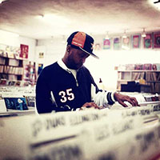
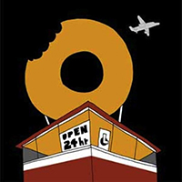

"James Dewitt Yancey, better known by the stage names J Dilla and Jay Dee, was an American record producer who emerged from the mid-1990s underground hip-hop scene in Detroit, Michigan. According to his obituary at NPR.org, he "was one of the music industry's most influential hip-hop artists, working for big-name acts including A Tribe Called Quest, De La Soul, Busta Rhymes, The Pharcyde and Common." Yancey died in 2006 of the blood disease Thrombotic thrombocytopenic purpura."
